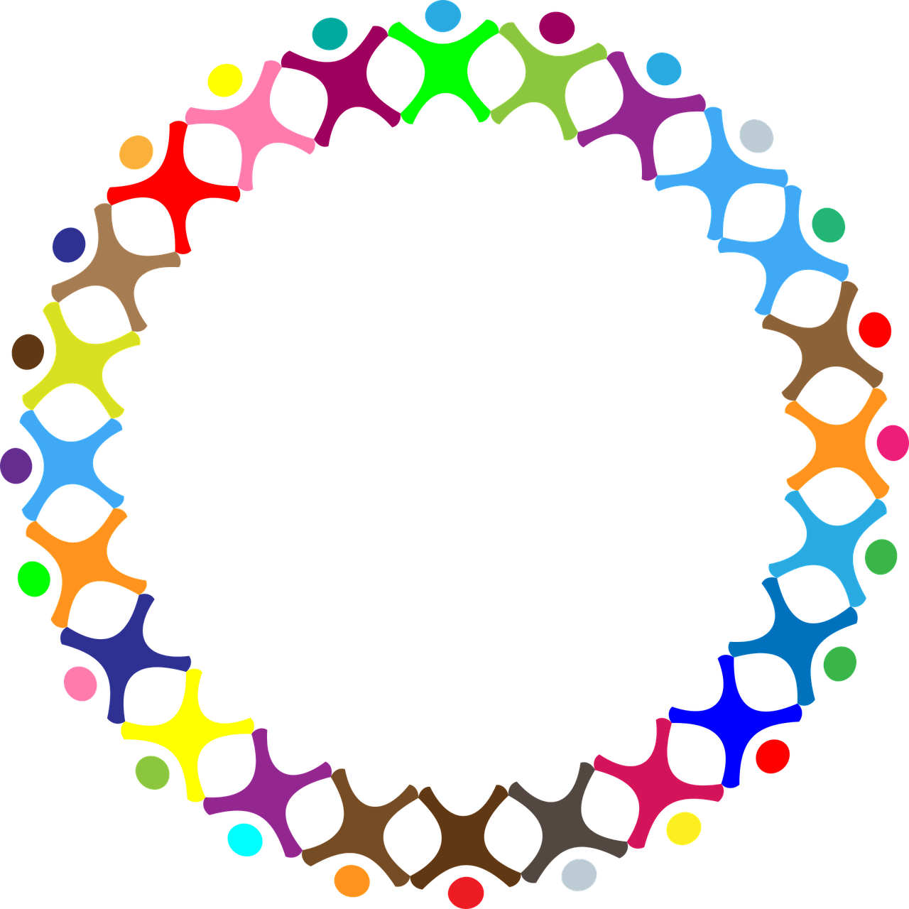

KIFREE
～Raise hand to deliver your feelings～
リアルタイムで人をつなぐ
Kifreeとは
Kifreeとは？
助けを必要する人は本当に必要なモノを必要な時に、必要な量得ることができる
支援者は本当に必要なモノが何なのか、いくつ必要なのかを自分の目で確認し支援ができる
状況が変わってもリアルタイムで確認ができ、システムで最適なバランスを保つ
人と人のつながりから世界を救う
それが…『Kifree』
本当に必要な”モノ”を要請
本当に必要な”モノ”の為に寄付
システムを通じてリアルタイムで”今”必要とされているモノと それに対して集まった支援が数値化される
行政やNPO団体へ情報を提供
行政やNPO団体はシステムのデータを基に助けを必要とする人へ 準備し届ける
支援者へ結果を報告
寄付したお金が正しく使用されたことを支援者は理解でき、 助けを必要とする人の所へは本当に必要としていたモノが届く。
そして、それぞれの想いが明確な形となって繋がる